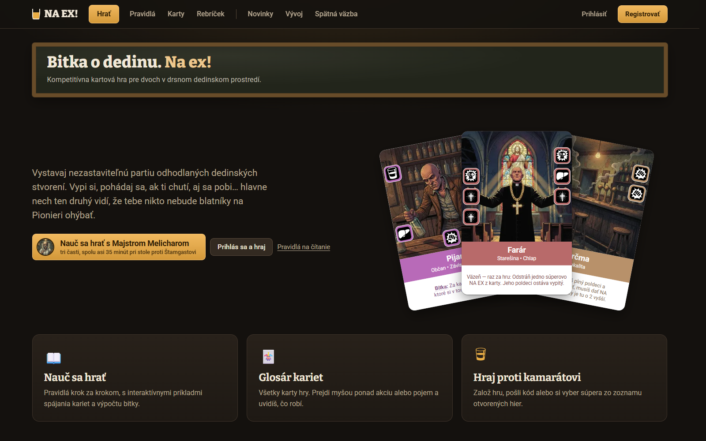
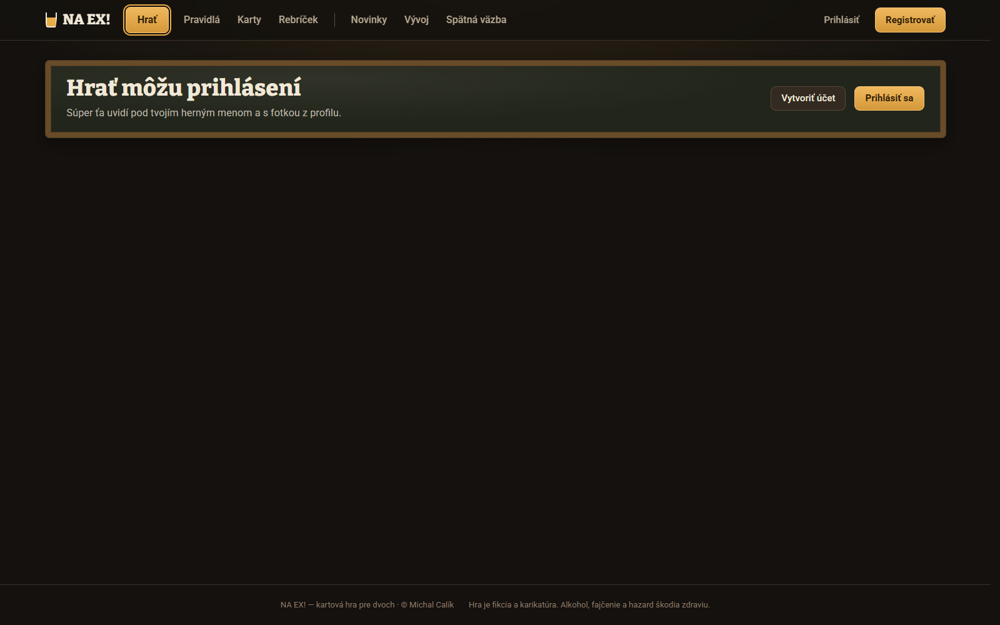
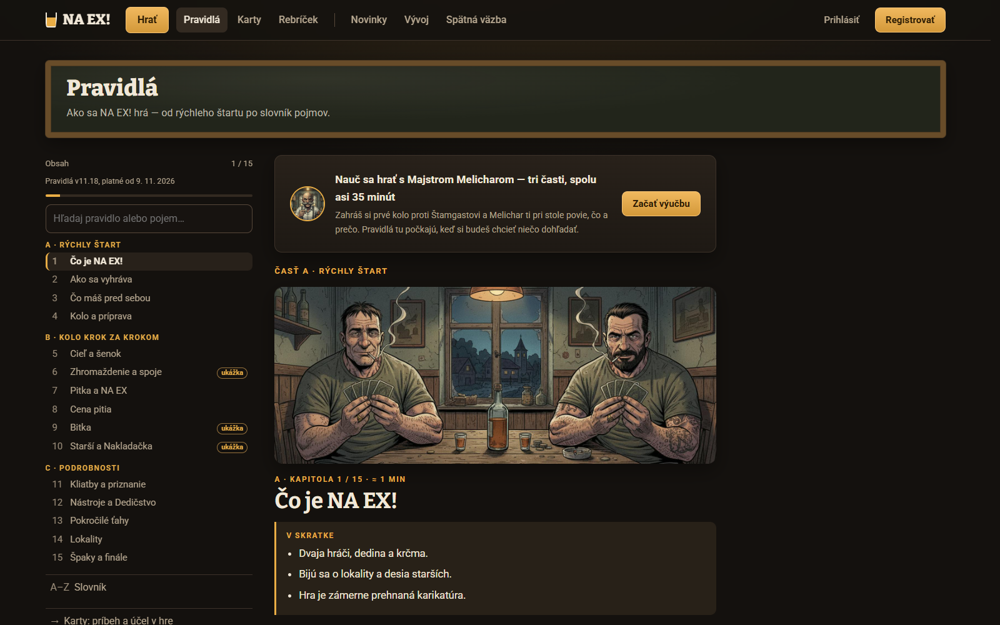
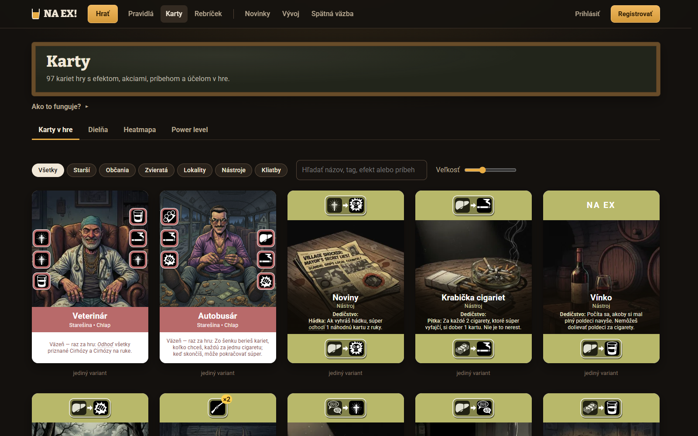

Prvý dojem návštevníka — návrh úprav
10. 11. 2026 · podklad pre Michala · zdroj: reakcia jedného skutočného návštevníka + fakty z kódu, výučby, reportov a snímok živého webu (cesta pri každom čísle)
Druhá správa sa dá overiť na scenári doslova: v prvých 14 krokoch výučby hráč klikne trikrát (lokalita, Hasič, „neťahám“) a Melichar mu medzitým povie 400 slov a asi 28 herných pojmov — krok 2 má 60 slov a 8 pojmov (špak, finále, bar, bitka, lokalita, starší, strach, zajatie), krok 3 ďalších 9 (kolo, hrana, akcia, Rana, Pecka, Petelica, tuhé, víťaz vyberá lokalitu), krok 5 vymenuje päť fáz a k nim hádku, Poveru, Pohoršenie a Poškodenie, ktoré prídu až o 37 krokov. „Stratil sa v tom vysvetlení“ sedí tiež: zajatie z kroku 2 sa vysvetlí až v 3. časti (krok 109), hádka v kroku 42. Nováčik si teda naozaj vyberal karty a počúval zhrnutie celej hry.
Je to prvý ľudský hlas: všetkých 33 názorov na živej Spätnej väzbe je od AI účtov (admin.ts nazory --zivy, 10. 11. 2026). Hovorí tri veci a každá má v kóde merateľnú príčinu:
- „Pochopil som len okrajovo“ — web nemá miesto, kde sa za 30 sekúnd dozvieš, čo v ťahu robíš a ako vyhráš. Úvod je len tematický a stránka Hrať je pre návštevníka prázdna.
- „S Meliškom som to nepobral, veľa pojmov, guláš“ — výučba aj Rýchly štart pravidiel sypú desiatky pojmov hneď na začiatku, často skôr, než ich hráč potrebuje. Výučbu navyše dostane až po registrácii.
- „Grafika silno AI s obvyklými chybami“ — vidí to na prvej obrazovke (tri karty vo vejári) a na ilustráciách kapitol pravidiel. Konkrétne nálezy sú v časti 4.
Téma sa mu páči a tón Melichara nekritizoval — to nemeniť.
1. Čo návštevník vidí
Snímky živého webu bez prihlásenia, 1600 × 1000 (10. 11. 2026).


Vyucba.tsx:91).

2. Diagnóza s číslami
| Čo | Stav | Dôkaz |
|---|---|---|
| Čas návštevníka | pár minút; sám hovorí „toľko pozornosti, koľko by venoval návštevník“ | reakcia |
| Čo mu web ponúka | výučba 35 minút v troch častiach (až po registrácii) alebo pravidlá v 15 kapitolách (špecifikácia 1 867 riadkov, slovník 61 pojmov) | Domov.tsx:46, kapitoly.tsx, PRAVIDLA.md §17 |
| Úvodná stránka | „Bitka o dedinu. Na ex!“ a „Vystavaj nezastaviteľnú partiu odhodlaných dedinských stvorení…“ — nič o tom, čo hráč robí a ako vyhrá; stránka nemá meta description, takže ani náhľad odkazu nič nepovie | Domov.tsx:30–40, index.html |
| Menu | 7 položiek pre každého (Hrať, Pravidlá, Karty, Rebríček, Novinky, Vývoj, Spätná väzba) + Prihlásiť, Registrovať; Rebríček, Vývoj a Spätná väzba sú pre návštevníka šum | snímky |
| Rýchly štart pravidiel | prvé 3 kapitoly zavedú 19 rôznych slovníkových pojmov (6 + 6 + 7); „Ako sa vyhráva“ hneď hovorí o lige, finále, pinnacle lokalite, výkupnom, väzňovi, exekúcii a Cirhóze | kapitoly.tsx:51–168 |
| Výučba „Prvá hra“ | 176 krokov, 4 276 slov Melichara; 1. časť: 53 krokov, 12 minút, ~40 pojmov; krok 2 zavedie 7 pojmov, krok 5 asi 8 (vymenuje päť fáz a k tomu hádku, Poveru a Pohoršenie, ktoré sa vysvetlia až o 37 krokov neskôr); najdlhší krok 1. časti má 69 slov (Hazard, zadĺženie, Dlh, pečeň, Cirhóza, kliatba naraz) | prva-hra.json: i-lokalita, i-fazy, i-zadlzenie |
| Posledný playtest výučby | 30. 10. (staršia verzia, 212 krokov): tempo a dĺžka 4,7/10, „Viem, čo klikať, ale nie prečo“, nováčik navrhuje 25–30 min; terajších 176 krokov nikto neoveril | docs/playtesty/vyucba-20261030-184959.html |
| UX návrh z 23. 10. | N1 „jeden pojem na krok, podčiarknuté pojmy s definíciou pod myšou vo výučbe“ je jediný nezrealizovaný z piatich | dizajn-vyucba-20261023-1843-ux.html; Vyucba.tsx slovník nepoužíva |
| Nápovedy v prvej partii | 21 hotových nápoved Melichara pre prvú skutočnú partiu je nezverejnených (zverejnena: false) | packages/core/data/vyucba/napovedy.json |
| Ukážka hry bez servera | už existuje: dva boti odohrajú partiu v prehliadači a stôl ukáže ľubovoľný okamih — ale len pre správcu na /hra/ukazka-stola | apps/web/src/hra/UkazkaStola.tsx |
| Grafika | z 19 kontrolovaných obrázkov (vejár, 15 kapitol, Melichar) ani jeden bez AI chyby; 3 výrazné (Krčma vo vejári, kapitoly 02 a 07); všetky kapitoly majú rovnaký štýl, svetlo a „tie isté tváre“ — to je silnejší signál „AI“ než jednotlivé chyby | časť 4 |
Záver diagnózy: návštevník nemá ani jednu cestu, ktorá by zodpovedala jeho rozpočtu času. Web má len dve dvere — „čítaj 15 kapitol“ a „zaregistruj sa a hraj 35 minút“ — a obe začínajú slovníkom. Chýbajú dvere „pozri sa 30 sekúnd“, „pozri si jedno kolo za minútu“ a „zahraj si prvé kolo za 5 minút“.
3. Zásada: Prvá desiatka slov
Hra má 61 pojmov a návštevník ich nemá ako vstrebať naraz. Navrhujem určiť desať slov, ktoré stačia na prvé kolo, a všetko ostatné považovať za „druhý jazyk“, ktorý sa nesmie objaviť na úvodnej stránke, v Rýchlom štarte pravidiel ani v 1. časti výučby. Nie je to premenovanie — pojmy ostávajú, mení sa len to, kedy ich človek stretne.
Druhý jazyk (až po prvom kole): strach, stupeň, priazeň, reči, Nakladačka, hádka, Povera, Pohoršenie, Viera, tuhé a mäkké, kraj, strana, prevaha, limit, pas, útočník a obranca, Hazard, zadĺženie, Dlh, pečeň, Cirhóza, kliatba, priznanie, nerest, Chuť, Absťák, Nástroj, Dedičstvo, Kšeft, Konflikt, Podpora, Vypiť, Záverečná, Výtržník, odpoveď na NA EX, liga, finále, výkupné, väzeň, exekútor, Sekera, nástenka… Práve tieto dnes stoja v kapitole „Ako sa vyhráva“ a v 5. kroku výučby.
3b. Triáž pojmov: čo von, čo vysvetliť a ako
Michal 10. 11.: „Pojmy, ktoré nie sú nevyhnutné pre hráča, ako napríklad bar a podobne, treba odstrániť. Pojmy ako Pitka, bitka a podobne treba domyselne vysvetliť.“
Ako sa „domyselne“ vysvetľuje — šesť pravidiel pre scenár
- Slovo príde až vtedy, keď je vec na stole a svieti. Nikdy v zozname vopred (dnešný krok 5 vymenuje päť fáz a hádku, ktorá príde o 37 krokov). Šedý stôl to už umožňuje.
- Jedna veta čo to je, jedna veta prečo ťa to zaujíma. Najviac 25 slov na bublinu. Čísla, vzorce a výnimky do 1. časti nepatria („máš dva plné, teda tri karty“ áno; „limit = plné + 1“ nie).
- Meno je obraz a vysvetlenie ho použije. Pitka = pije sa; NA EX = vyliať pohárik na kartu na ex; špak = ohorok = bod; šenok = výčap, kde sa kupuje; starší = dedinské autority. Definíciu zo slovníka nikdy.
- Hneď po vete ide ťah hráča, ktorý slovo použije. Kvíz až po použití, nie pred ním.
- Každé slovo zaznie trikrát: pri predstavení, pri prvom použití hráčom, v zhrnutí „Toto už vieš“ na konci časti. Vo výučbe podčiarknuté, definícia pod myšou.
- Text karty v 1. časti ignorujeme. Melichar: „Čo je na karte napísané, dnes nechaj tak — hráme len ikony. Texty prídu v 3. časti.“ Rozdanie 1. časti sa vyberie tak, aby žiadny efekt v prvom kole nevystrelil (Hazard, pečeň, Povera von).
Verdikt pre každý pojem, ktorý dnes 1. časť vysype
Von = nahradiť bežným slovom vo výučbe, nápovedách aj v nápisoch stola. Vysvetliť = ostáva v 1. časti, text návrhu nižšie. Neskôr = príde v 2.–4. časti alebo v nápovede prvej partie, keď nastane. Stĺpec „Kde“ hovorí, či slovo hráč vidí aj mimo výučby — tie sa nedajú len vynechať.
| Pojem | Kde ho hráč vidí | Verdikt | Náhrada / kedy |
|---|---|---|---|
| bar | len výučba (51×) a nápovedy (10×); stôl ho nikde nepíše | von | „dole pri sebe“, „tvoje špaky dole“ |
| Draft | nadpis fázy na stole „Draft — šenok a pokus o zajatie“, výučba 21× | von | nadpis fázy „Šenok“ (zajatie dopísať, len keď je možné); vo výučbe „kupovanie zo šenku“ |
| Voľba cieľa | nadpis fázy | von | „vyber, o ktoré miesto sa pobijete“; nadpis fázy „O čo sa bijeme“ (slovo cieľ si nováčik pletie s cieľom hry) |
| tuhé poškodenie, Poškodenie | stôl „tuhé 7 : 5“, karty (Bitkár +1 tuhé) | neskôr | v 1. časti „údery“; slovo tuhé príde v 2. časti spolu s mäkkým, keď prvýkrát na niečom záleží rozdiel |
| hrana | stôl (ľavá / pravá hrana lokality) | neskôr | v 1. časti „ikony na okraji karty“; hrana príde s prevahou v 2. časti |
| limit (vykladania) | stôl (čísla) | neskôr | „máš dva plné poldeci, teda vyložíš tri karty“; slovo limit v 2. časti |
| finále, liga, 3 / 5 / 7 bitiek | stôl (rozpis kôl) | neskôr | „dnes sa pobijeme raz“; finále v 3. časti |
| zajatie („pozatvára“), väzeň | stôl, karty | neskôr | 3. časť, ako dnes (krok 109) |
| hádka, Povera, Pohoršenie, Viera, mäkké, reči | stôl, karty | neskôr | 2. časť; rozdanie 1. časti bez Povery, prvý spoj ukázať na úderoch |
| Hazard, zadĺženie, Dlh, pečeň, Cirhóza, kliatba, exekútor | stôl, karty | neskôr | 2.–3. časť; rozdanie 1. časti bez týchto akcií (dnešný krok 25 má 69 slov) |
| počet Pitiek (vzorec), akcia Cigareta, Posilnenie, kúpa poldeci za 5 cigariet, doliatie | stôl | neskôr | 2. časť alebo nápoveda, keď nastane |
| stupne a farby strachu, cena posunu, priazeň, Advokát, Nakladačka | stôl (teplomery) | neskôr | 2. časť; v 1. časti len „Farár sa ťa bojí“ (pozri strach nižšie) |
| naspodok balíčka, stavba šenku, Recidivista | stôl pri stavbe | neskôr | 2. časť, keď šenok stavia hráč (dnes ho stavia Melichar a aj tak to vysvetľuje) |
| strana „pri tebe“ | stôl | neskôr | pri voľbe lokality stačí náhľad; strana a kraj v 2. časti |
| scorecard, Partia (tvoje karty), Náradie a Občania (balíčky) | výučba 1×, stôl len počty | von | pre hráča nikdy; „tvoje karty“, „balíček nástrojov / dedinčanov“ |
| špak | všade | vysvetliť | krok 2 |
| bitka | názov fázy, karty | vysvetliť | krok 2 krátko, naplno pri prvej bitke s číslami |
| lokalita | stôl, karty | vysvetliť | krok 3, keď tri lokality svietia |
| akcie, údery (Rana, Pecka, Petelica) | karty | vysvetliť | krok 3, keď ikony svietia |
| šenok | názov fázy, stôl (59 nápisov), 4 karty, pravidlá (50 + 18), výučba 8, nápovedy 9, ťahák AI 14 | premenovať | Michal 10. 11.: na slovo „šenok“ sú negatívne ohlasy. Je to nárečové slovo pre krčmu (zo Schenke), nováčik ho nepozná a pletie si ho s Krčmou, ktorá je v hre lokalita. Vec sama je nevyhnutná (ponuka kariet, z ktorej sa kupuje), meno nie. Zvažované: Ponuka, Jarmok, Verbovačka. Michal 10. 11. rozhodol: Ponuka. Premenovanie je len text (kód ostáva senok), zasiahne 4 karty, nápisy stola, pravidlá, výučbu, nápovedy a ťahák — urobí Korektor + Programátor + Admin za pol dňa. |
| cigareta | stôl, karty | vysvetliť | pri prvej kúpe |
| Zhromaždenie, línia, poldeci | názov fázy, stôl | vysvetliť | keď fáza začne; nadpis fázy doplniť „Zhromaždenie — kladenie kariet“ |
| spoj | stôl (svieti), karty | vysvetliť | pri prvom dotyku dvoch úderov |
| „už neťahám“ (pas) | tlačidlo | vysvetliť | slovo pas netreba, stačí tlačidlo a prečo |
| Pitka, NA EX | názov fázy, stôl, karty, názov hry | vysvetliť | keď fáza začne; jeden NA EX hráča už v 1. časti (dnes až v 2.) — je to ťah, podľa ktorého sa hra volá; odpoveď na NA EX a zdvojenie osamelej ikony až v 2. časti (bot v 1. časti NA EX nedáva — overí Vymyselník) |
| starší, strach | stôl (teplomery), všade | vysvetliť | až po prvej bitke, keď hráč rozdeľuje strach — nie v kroku 2 |
Spolu v 1. časti 13 slov (špak, bitka, lokalita, akcia a údery, šenok, cigareta, Zhromaždenie, línia, poldeci, spoj, Pitka, NA EX, starší a strach), každé v momente, keď je na stole. Dnes ich je ~40, z toho 28 skôr, než hráč položí prvú kartu.
Návrh vysvetlení (Melicharov hlas, tvoje znenie má prednosť)
| Slovo | Čo (keď je to na stole) | Prečo ťa to zaujíma / čo hneď urobíš |
|---|---|---|
| špak | „Tu sa body rátajú v ohorkoch — špakoch. Na konci vyhrá, kto ich má viac. Dole pri sebe máš nula.“ | „Špaky dáva vyhratá bitka. Poď si po ne.“ |
| bitka | „Bitka je koniec kola: sčítajú sa údery z kariet na stole. Kto má viac, vyhral.“ | „Víťaz berie špak za každú kartu, čo na stole leží — aj za súperove.“ Pri prvej bitke znova s číslami: „Ty 7, on 5. Vyhral si o 2 a berieš 6 špakov, lebo na stole leží šesť kariet.“ |
| lokalita | „Tri miesta v dedine — lokality. O jedno sa dnes pobijete, leží v strede stola.“ | „Vyber, o ktoré. Klikni na Lesnú cestu.“ |
| akcie, údery | „Ikony na okraji karty sú akcie. Rana, Pecka, Petelica sú údery za 1, 2, 3.“ | „Hasič má Ranu a Petelicu — jeden a tri. Ber ho.“ |
| ponuka (dnes šenok) | „Toto je ponuka — tu sa kupujú karty. Jedna za cigaretu. Striedate sa, kým obaja neprestanete.“ | „Začínaš ty. Kúp Hasiča.“ |
| cigareta | „Cigarety sú tu drobné. Platíš nimi v šenku a za dobratie karty. Máš tri.“ | „Jedna za Hasiča, dve ti ostanú na horšie časy.“ |
| Zhromaždenie, línia | „Zhromaždenie: striedavo kladiete karty k lokalite do jedného radu — línie. Tu sa hra rozhoduje, zvyšok sú detaily.“ | „Štamgast začína. Pozeraj.“ |
| poldeci | „Poldeci je pohárik pálenky. Koľko máš plných, toľko kariet vyložíš, a ešte jednu. Máš dva, teda tri.“ (dnešný text, je dobrý) | „Prilož Hasiča k jeho Zámočníkovi.“ |
| spoj | „Pozri: Petelica tvojho Hasiča sa dotkla Rany jeho Zámočníka v rovnakej výške. To je spoj. Platia len ikony v spoji, osamelá ikona je mŕtva.“ | „Preto karty prikladáš tak, aby tvoje údery našli pár. Tvoje tri v spoji, jeho jedna.“ |
| už neťahám | „Keď už nechceš vykladať, klikni „už neťahám“.“ | „Za karty, čo si nechal v ruke, dostaneš cigarety. Niekedy sa oplatí nehrať.“ |
| Pitka, NA EX | „Vyložené je, teraz sa pije — Pitka. Vyber jednu súperovu kartu v línii a vylej na ňu poldeci na ex. NA EX! Karta ostane ležať, ale jej spoje zhasnú.“ | „Daj NA EX Zámočníkovi — jeho Rana v spoji zhasne a tvoj Hasič ostane sám so svojimi tromi. Kto NA EX dostane, nevie to, kým sa poldeci neotočia.“ (tajnosť a odpoveď súpera až v 2. časti) |
| starší, strach | „Vyhral si o 3. Starší — dedinské autority, Farár, Starosta a spol. — to videli. Tie 3 sú strach, rozdeľ ich medzi nich.“ | „Klikni trikrát na Farára. Starší, ktorý sa ťa bojí, ti bude každé kolo sypať špaky — čím viac sa bojí, tým viac.“ |
Pri každej vete je na stole práve to, o čom hovorí; nič sa nevymenúva dopredu. Čísla v príkladoch (7 : 5, o 3) doplní Vymyselník podľa rozdania.
Čo sa musí zmeniť mimo scenára
- Nápisy fáz na stole (
prechodFazy.ts): „Draft — šenok a pokus o zajatie“ → „Šenok“, „Voľba cieľa“ → „O čo sa bijeme“, „Zhromaždenie“ → „Zhromaždenie — kladenie kariet“. Inak sa slová, ktoré výučba vynechá, objavia na stole bez vysvetlenia. - Nápovedy prvej partie (
napovedy.json): „bar“ 10× prepísať v tom istom prechode; nápovedy sú miesto, kde sa druhý jazyk učí, keď nastane. - Slovník na stránke Pravidlá (
slovnik.ts): nechať len slová, ktoré hráč musí vedieť; čisto špecifikačné (Partia, scorecard, Dobratie po bitke, Čiarky na účte, Zaplatený a držaný stupeň, Stav staršieho, Boss, Karta zadarmo, Preskúmanie) ostanú len vPRAVIDLA.mdpre vývoj a rozhodcu.
4. Grafika — čo Oko našlo
Kontrola pri plnej veľkosti: tri karty vo vejári úvodu, 15 ilustrácií kapitol pravidiel a avatar Melichara. Škála 0 čisté · 1 drobnosť · 2 výrazná chyba, ktorú si všimne bežný návštevník. Čisté nebolo nič.
| Obrázok | Stupeň | Chyba |
|---|---|---|
| Krčma (vejár na úvode) | 2 | dva dymové pramene od stropu a zo steny bez zdroja; hrnčeky na polici splynuté s fľašami; pípy ako tri zlaté stĺpiky |
| 07 Pitka a NA EX | 2 | klonovaný dav s rovnakými kričiacimi tvárami; ruka v popredí väčšia ako hlava, prsteň na zlom mieste |
| 02 Ako sa vyhráva | 2 | dvaja bradatí muži zrkadlovo identickí, rovnaký kabát; kufrík splýva s kabátom |
| 01 Čo je NA EX! | 1 | prvá ilustrácia na Pravidlách: dvaja muži s rovnakými šatami, telami a pózou, zrkadlovo |
| Melichar (avatar) | 1 | červené kybernetické oko, drôty a trubice na hlave — pôsobí ako typický AI cyberpunk a je všade (úvod, pravidlá, výučba); textúra plastová |
| Pijan, Farár (vejár) | 1 | AI lesk (ružovo-fialová pleť, trblietavý kríž); Kristus z vitráže „vyrastá“ Farárovi z hlavy |
| 03, 08, 15 | 1 | pseudopísmo na účtenkách, bankovkách a tabuli |
| 04, 06, 10 | 1 | podobné alebo šablónové tváre a pózy viacerých postáv |
| 05, 09, 11, 13, 14 | 1 | plastová lesklá látka, splývajúce predmety, most z ničoho, cibuľová kupola na slovenskej dedine |
| 12 Nástroje | 1 | najčistejšia (bez postáv); remeň pušky nevisí na ničom |
Dym z cigariet a ruky s kartami sú väčšinou v poriadku — pravidlá zo styl.md fungujú. Čo neprešlo: klonované tváre a pózy (styl.md to pri kartách zakazuje, pri kapitolách sa to nestrážilo), pseudopísmo a AI lesk. A hlavne: všetky kapitoly majú rovnaký štýl, rovnaké svetlo lampy a „tie isté tváre“, čo návštevník prečíta ako „AI“ aj bez jedinej chyby.
5. Návrhy
Zoradené podľa pomeru účinok / námaha. Pri každom: čo, prečo, čo to stojí, kto, ako overíme.
6. Odporúčané poradie
- Tento týždeň, malé: N1 (pás „Hra za 30 sekúnd“, pravdivý čas, description, stránka Hrať pre návštevníka), N3 (zapnúť nápovedy), N6 body 1–3 (vejár, tri najhoršie kapitoly, pseudopísmo).
- Najväčší účinok: N2 (Prvé kolo za 5 minút) — tu návštevník stroskotal. Potom playtest nováčikmi.
- Potom: N4 (Rýchly štart z Prvej desiatky), N7 (výučba bez účtu), N6 body 4–6.
- Keď bude čas: N5 (ukážka jedného kola), priebežne N8.
7. Čo nenavrhujem
- Premenovať pojmy (poldeci, špak, Pitka, NA EX) — nesú tému, ktorá sa návštevníkovi páčila. Problém je poradie a množstvo, nie slová.
- Zjemniť Melichara — tón mal v playteste najlepšiu známku (7,3/10) a návštevník sa naň nesťažoval.
- Zrušiť šedý stôl vo výučbe — je zámer (fokus na to, o čom Melichar hovorí).
- Zjednodušiť samotné pravidlá — toto je o vstupe do hry, nie o hre; hĺbka je pre hráčov, ktorí ostanú.
8. Rozhodni
Zaškrtnutia sa neukladajú — slúžia len na čítanie. Odpoveď stačí v chate, napr. „N1, N3, N6 áno; N2 upraviť: …“.
9. Rozhodnuté 10. 11. a zadanie pre Leadera
Skonsolidované pojmy
| Vrstva | Pojmy | Kde sa učia |
|---|---|---|
| Jadro (13) | špak · bitka · lokalita · akcia a údery (Rana 1, Pecka 2, Petelica 3) · ponuka (kariet) · cigareta · Zhromaždenie · línia · poldeci · spoj · Pitka · NA EX · starší a strach | 1. časť výučby, každé v momente, keď je na stole; úvodná stránka a Rýchly štart pravidiel smú používať len tieto |
| Druhá vrstva | útočník a obranca · strana a kraj · hrana lokality a prevaha · limit · tuhé a mäkké · hádka, Povera, Pohoršenie, Viera · reči · odpoveď na NA EX a zdvojenie osamelej ikony · Vypiť (ďalšia karta za plný poldeci) · Záverečná · stavba ponuky · Hazard, zadĺženie, Dlh · pečeň, Cirhóza · kliatba, priznanie · priazeň · stupne strachu · Nakladačka | 2. časť výučby a nápovedy prvej partie |
| Tretia vrstva | zajatie a väzeň · Nástroj a Dedičstvo · spúšťače na kartách (Nástup, Furt, Kšeft, Konflikt, Podpora, Pitka, Bitka, Výhra, Prehra) · efekty lokalít · finále a liga · exekútor · Výtržník · doliatie a barter · nerest, Chuť, Absťák · výkupné · Sekera | 3.–4. časť výučby a nápovedy, keď nastanú |
| Von (pre hráča nikdy) | bar („dole pri sebe“) · Draft (→ Ponuka) · šenok (→ ponuka) · scorecard · Partia („tvoje karty“) · Náradie a Občania ako názvy balíčkov („balíček nástrojov / dedinčanov“) · „tuhé poškodenie“ v 1. časti (→ údery) | výučba, nápovedy, nápisy stola, stránka Pravidlá a jej slovník; v PRAVIDLA.md pre vývoj smú ostať |
Rozsah zadania
- Šenok → Ponuka všade, kde to číta hráč: nápisy stola (59 reťazcov, nadpis fázy „Draft — šenok a pokus o zajatie“ → „Ponuka“), stránka Pravidlá a slovník (18), výučba (8), nápovedy (9), ťahák AI (14),
PRAVIDLA.md(50), 4 texty kariet (Väzeň Starostu, Cintorín, Živnostník a spol. — v tvorcovi cez Admina; zverejnenie sady = samostatný súhlas Michala). Identifikátory v kóde (senok) ostávajú. - 1. časť výučby „Prvé kolo“ podľa triáže v 3b: 13 slov jadra, jeden pojem na krok, šesť pravidiel vysvetľovania, texty z tabuľky 3b ako podklad (Melicharov tón, bez nových vulgarizmov od agentov), jeden NA EX hráča už v 1. časti, rozdanie bez Hazardu, pečene a Povery, zhrnutie „Toto už vieš“ na konci, podčiarknuté pojmy s definíciou pod myšou v bubline (
Pojem.tsx,slovnik.ts). Presunuté kroky idú do častí 2–4, nič sa nestráca. - Nápisy fáz na stole (
prechodFazy.ts): „Ponuka“ (z bodu 1); „Voľba cieľa“ → „O čo sa bijeme“ a „Zhromaždenie — kladenie kariet“ sú odporúčané, Michal ich jednotlivo neschválil. - Nápovedy prvej partie (
napovedy.json): „bar“ 10× prepísať, šenok → ponuka; či ich zapnúť (zverejnena), Michal nerozhodol (N3). - Slovník na stránke Pravidlá (
slovnik.ts) a Rýchly štart: slová „von“ odstrániť, jadro vysvetliť; úplný prepis Rýchleho štartu (N4) Michal nerozhodol — minimálne však premenovanie a odstránenie slov „von“. - Titulka: po skrátení 1. časti opraviť sľub času (dnes „tri časti, spolu asi 35 minút“).
- Nasadiť na Vypálenú (týka sa oficiálnej hry; vetvu a poradie s master rozhodne Leader), po nasadení Novinka pre hráčov („Šenok sa volá Ponuka, prvá časť výučby je kratšia“).
Nerozhodnuté (Leader sa spýta Michala, keď na to príde): N1 pás „Hra za 30 sekúnd“, N3 zapnutie nápoved, N4 úplný prepis Rýchleho štartu, N5 ukážka kola, N6 grafika, N7 výučba bez účtu, N8 meranie, playtest výučby po prestavbe (len so súhlasom).